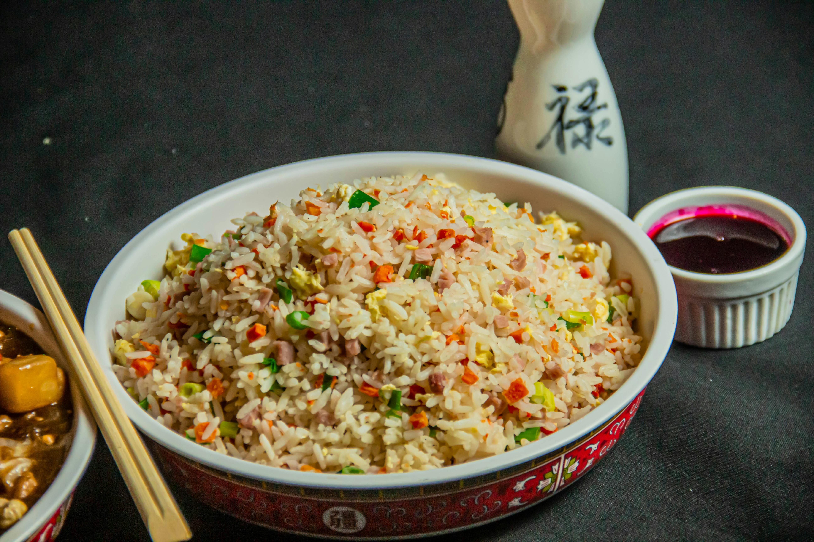

Brownies are a popular dessert known for their rich chocolate flavor and soft, fudgy texture. They are often enjoyed as a sweet treat or snack.
Pasta
Pasta is a beloved dish with roots in Italian cuisine, featuring a variety of shapes and textures. It is typically served with flavorful sauces and toppings.

Egg Fried Rice
Egg fried rice is a classic dish combining rice and eggs with simple seasonings. It's a staple in many cultures, valued
for its comforting and satisfying taste.
Dumplings
Dumplings are bite-sized delights found in many cuisines, featuring dough wrapped around savory or sweet fillings. They
can be steamed, boiled, or fried.
Biriyani is a flavorful and aromatic rice dish, often associated with celebration and tradition. Its vibrant spices and
layered preparation make it a favorite worldwide.